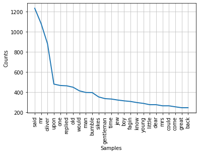
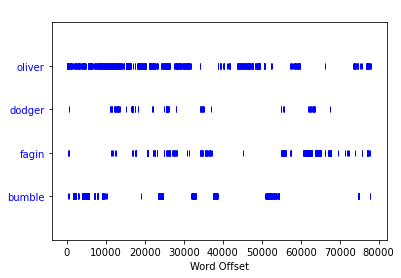

Python Natural Language
and Web Scraping
So far throughout my data science journey I have noticed a reccurring theme involving the difficulties of obtaining data, in many cases it is down to the data scientist to obtain the dataset that they wish to work with. This peaked an interest into web-scraping, and its many uses.
Scraping Project Gutenberg
Having previously come across project Gutenberg, a collection of novels in the public domain, I decided it would be an excellent place to begin scraping.
Using the beautifulsoup package, the html from the page could be parsed and from this the text elements are extracted. Using the natural language toolkit, the text is converted to word tokens using the tokenizer function.
All words are then converted to lower case in order to prevent the same words being treated seperately due to capital letters. Finally, common filler words known as
'stopwords' are identified within the list of tokens and removed to produce more insightful language analysis.
The language analysis was carried out on the novel Oliver Twist, a graph showing the most common 25 words and their frequencies along with a dispersion plot showing the instances of 4 main characters were produced as presented below.
 Scraping Tripadvisor Reviews
I felt a desire to apply this concept to something more useful. It is important for many buisinesses to keep track of their customer satisfaction and this means keeping track of their reviews on reputable sites such as Tripadvisor, therefore it is neccesary to first scrape these reviews in order for them to be analysed. This brought additional challenges such as continually updating web pages, pop-ups and dynamic elements.
For this task, the selenium library was used as it is better used for more complex projects. It runs an automated browser to excecute the task and navigate the website as if it were controlled by a user, making navigation of pop ups and multiple pages possible. Initially, two pop ups were to be located and closed, this was achieved using the Xpath of the close button to locate the element and then command the program to click the element.

The script was then set up to navigate to the reviews section of the Tottenham Hotspur Stadium Tripadvisor page, before writing each review and title to a CSV file and selecting the next page button. From this, the wordcloud library allowed the generation of a wordcloud, displaying the most common words from the CSV file list in a graphical format this was displayed using matplotlib.